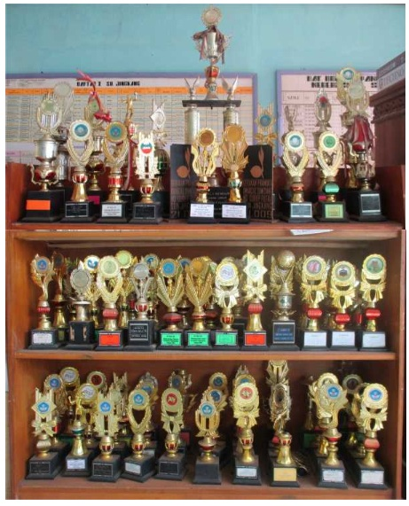

Prestasi Siswa

- Juara 1 Lomba Olimpiade Matematika Tingkat Kabupaten 2024
- Juara 2 Lomba Cerdas Cermat SD Nasional 2023
- Juara 1 Lomba Kebersihan Sekolah se-Kecamatan 2023
- Juara 3 Lomba Sains IPA Tingkat Provinsi 2024
- Juara Harapan 1 Lomba Pidato Bahasa Indonesia 2023
- Juara 1 Lomba Mewarnai Tingkat SD Se-Kota 2024
- Juara 2 Lomba Tari Tradisional Daerah 2024
- Juara 1 Lomba Robotik SD Tingkat Kabupaten 2024
- Juara 2 Lomba Desain Poster Digital Nasional 2024
- Finalis 10 Besar Olimpiade Bahasa Inggris Tingkat Nasional 2024
- Juara 1 Lomba Pramuka Tingkat Kecamatan 2024
- Juara 3 Lomba Voli Tingkat Kota 2024
- Juara 2 Lomba Cipta Puisi Nasional Usia Dini 2023
- Juara 1 Lomba Musik Tradisional Anak 2024
- Juara 1 Lomba Kebersihan dan Kedisiplinan Sekolah 2024